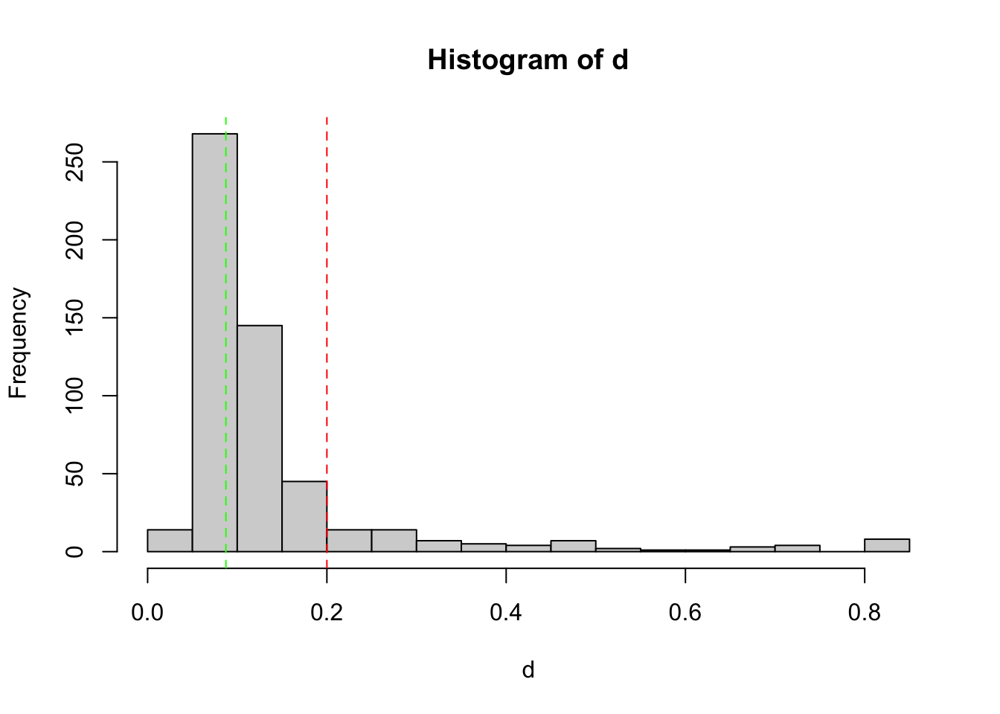
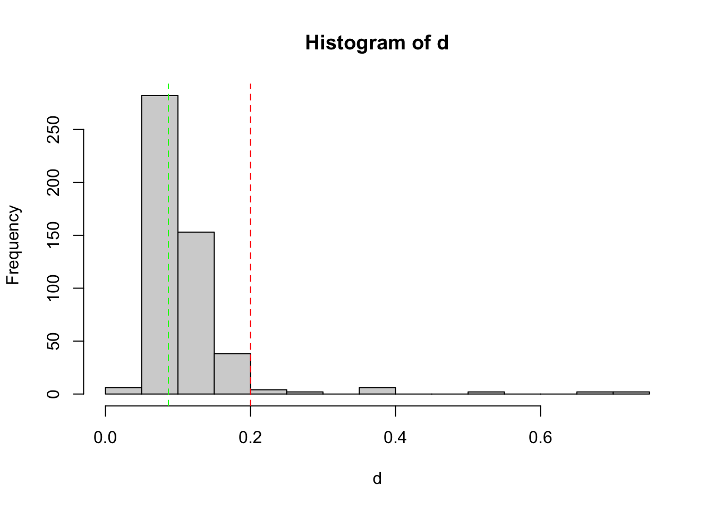
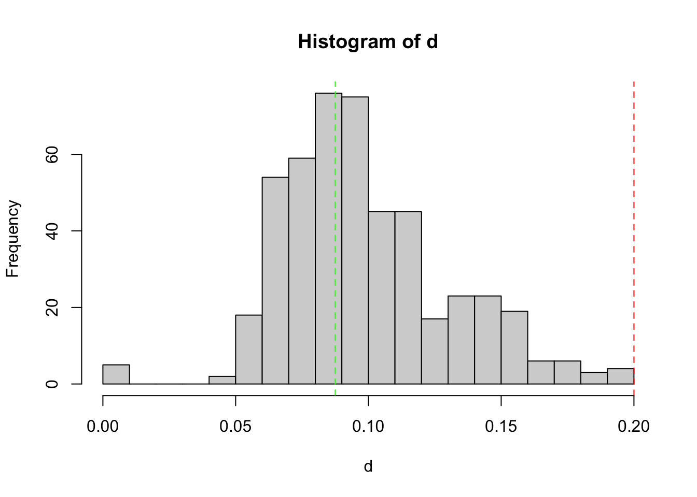
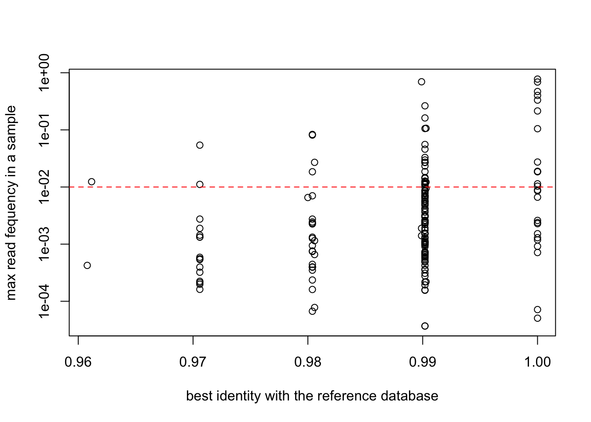
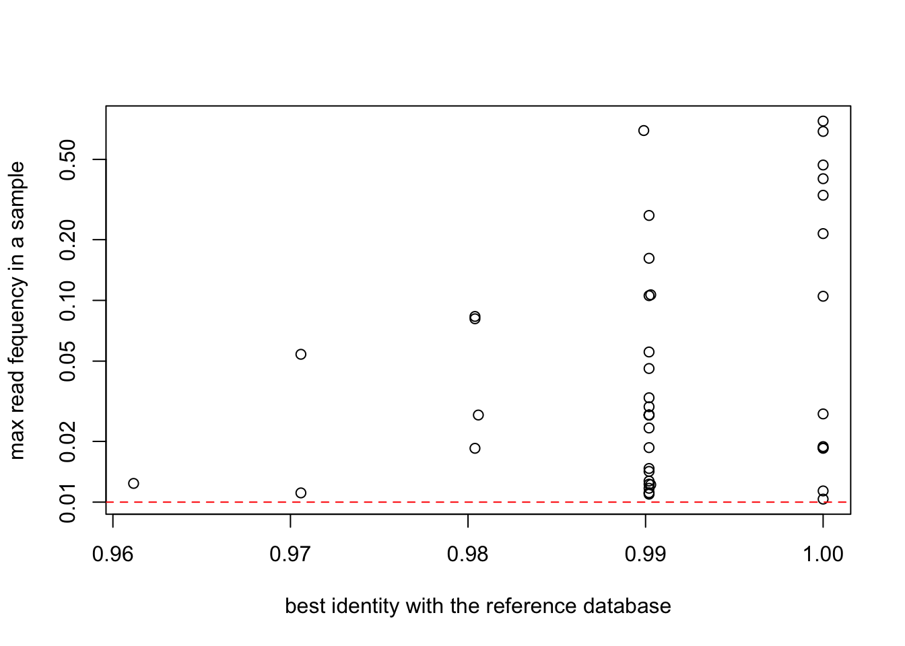

packages <- c("igraph", "tidyverse", "devtools","R.utils","vegan")
install.packages(setdiff(packages,
rownames(installed.packages())),
dependencies = TRUE
)DNA metabarcoding diet analysis in reindeer is quantitative and integrates feeding over several weeks
Stefaniya Kamenova ![]()
Eric Coissac
Abstract
Filtering of the EUKA02 DNA metabarcoding raw data.
Setting up the R environment
Install missing packages
Loading of the R libraries
ROBIToolspackage is used to read result files produced by OBITools.ROBITaxonomypackage provides function allowing to query OBITools formated taxonomy.
if (!"ROBITools" %in% rownames(installed.packages())) {
# ROBITools are not available on CRAN and have to be installed
# from http://git.metabarcoding.org using devtools
metabarcoding_git <- "https://git.metabarcoding.org/obitools"
devtools::install_git(paste(metabarcoding_git,
"ROBIUtils.git",
sep="/"))
devtools::install_git(paste(metabarcoding_git,
"ROBITaxonomy.git",
sep="/"))
devtools::install_git(paste(metabarcoding_git,
"ROBITools.git",
sep="/"))
}
library(ROBITools)
library(ROBITaxonomy)tidyverse(Wickham et al., 2019) provides various method for efficient data manipulation and plotting viaggplot2(Wickham, 2016)
library(tidyverse)library(R.utils)library(vegan)library(magrittr)source("methods.R")
Attaching package: 'matrixStats'The following object is masked from 'package:dplyr':
count
Attaching package: 'vctrs'The following object is masked from 'package:dplyr':
data_frameThe following object is masked from 'package:tibble':
data_frameLoading the data
Load the NCBI taxonomy
if (! file.exists("Data/ncbi20210212.adx")) {
gunzip("Data/ncbi20210212.adx.gz",remove=FALSE)
gunzip("Data/ncbi20210212.ndx.gz",remove=FALSE)
gunzip("Data/ncbi20210212.rdx.gz",remove=FALSE)
gunzip("Data/ncbi20210212.tdx.gz",remove=FALSE)
}taxo <- read.taxonomy("Data/ncbi20210212")Loading the metabarcoding data
if (! file.exists("Data/Rawdata/EUKA02_all_paired.ali.assigned.ann.diag.uniq.ann.c1.l10.clean.EMBL.tag.ann.sort.uniq.grep.tab"))
gunzip("Data/Rawdata/EUKA02_all_paired.ali.assigned.ann.diag.uniq.ann.c1.l10.clean.EMBL.tag.ann.sort.uniq.grep.tab.gz",remove=FALSE)
EUKA02.raw = import.metabarcoding.data("Data/Rawdata/EUKA02_all_paired.ali.assigned.ann.diag.uniq.ann.c1.l10.clean.EMBL.tag.ann.sort.uniq.grep.tab")Loading the metadata
samples.metadata = read_csv("Data/Faeces/sampling_dates.csv",
show_col_types = FALSE)Sample description
Normalization of samples names
Extract information relative to PCR replicates and sample names.
sample_names_split = strsplit(as.character(sample_names), "_R")
replicate = sapply(sample_names_split, function(x) x[length(x)])
sample_id = sapply(sample_names_split, function(x) x[1])
samples_desc = data.frame(name = samples(EUKA02.raw)$sample, replicate = replicate, sample_id = sample_id)
EUKA02.raw@samples = samples_desc
EUKA02.raw@motus <- EUKA02.raw@motus %>% select(-starts_with("obiclean_status:"))Categorize MOTUs
DNA Sequence of the synthetic sequence used as EUKA02 positive controls.
Standard1 = "taagtctcgcactagttgtgacctaacgaatagagaattctataagacgtgttgtcccat"- Identify which MOTU is corresponding to the positive control sequence and associated it to category
standard1. - All the MOTUs exhibiting a similarity with one of the reference SPER01 database greater than 80% is tagged as
EUKA02 - The remaining sequences are tagged as
Unknown
sequence_type = rep("Unknown", nrow(motus(EUKA02.raw)))
sequence_type[which(motus(EUKA02.raw)$`best_identity:db_EUKA`> 0.80)] = "EUKA02"
sequence_type[which(motus(EUKA02.raw)$sequence == Standard1)] = "standard1"
EUKA02.raw@motus$sequence_type = as.factor(sequence_type)
table(EUKA02.raw@motus$sequence_type)
EUKA02 Unknown
252502 223912 spermatophyta.taxid <- ecofind(taxo,patterns = "^Spermatophyta$")
lecanoromycetidae.taxid = ecofind(taxo,"^Lecanoromycetidae$")
to_keep = (is.subcladeof(taxo,EUKA02.raw@motus$taxid,spermatophyta.taxid) |
EUKA02.raw@motus$taxid == spermatophyta.taxid) |
(is.subcladeof(taxo,EUKA02.raw@motus$taxid,lecanoromycetidae.taxid) |
EUKA02.raw@motus$taxid == lecanoromycetidae.taxid)
table(to_keep)to_keep
FALSE TRUE
429806 46077 EUKA02.plant_lichen <- EUKA02.raw[,which(to_keep)]Curation procedure
Select motus occuring at least at 1% in at least one PCR
norare = apply(decostand(reads(EUKA02.plant_lichen),method = "total"),
MARGIN = 2,
FUN = max) >= 0.01
table(norare)norare
FALSE TRUE
45862 215 EUKA02.norare <- EUKA02.plant_lichen[,which(norare)]Filtering for PCR outliers
Only library 1 and 2 have individually tagged PCR replicates
library_3.ids = read.csv("Data/samples_library_3.txt",
stringsAsFactors = FALSE,
header = FALSE)[,1]library3.keep = gsub("_R.?$","_R",rownames(EUKA02.norare)) %in% library_3.ids
EUKA02.lib3 = EUKA02.norare[library3.keep,]
EUKA02.lib12= EUKA02.norare[!library3.keep,]
dim(EUKA02.lib3)[1] 63 215dim(EUKA02.lib12)[1] 542 215Load the script containing the selection procedure implemented in function tag_bad_pcr.
source("Select_PCR.R")First selection round
keep1 = tag_bad_pcr(samples = samples(EUKA02.lib12)$sample_id,
counts = reads(EUKA02.lib12),
plot = TRUE,
threshold=0.2
)
Histogram shows the empirical distribution of the PCR replicate distances. The red vertical dashed line indicates the threshold used to discard outlier PCRs. The green vertical dashed line indicates the mode of the observed distribution.
table(keep1$keep)
FALSE TRUE
45 497 FALSEis the count of PCR to discard, TRUE the count of PCR conserved at the end of this selection round.
samples(EUKA02.lib12)$name[!keep1$keep] [1] "DNANC11_R3" "DNANC12_R3" "DNANC13_R3" "DNANC15_R3" "DNANC_10_R2"
[6] "DNANC_12_R3" "DNANC_13_R3" "DNANC_15_R3" "DNANC_7_R2" "DNANC_8_R2"
[11] "DNANC_9_R2" "PCRNC_3_R2" "PCRNC_4_R1" "PCRNC_4_R2" "PCRNC_5_R3"
[16] "PCRNC_6_R3" "PCRPOS_3_R2" "X_28_R3" "X_37_R3" "X_3_R3"
[21] "X_9_R3" "Y_24_R3" "Y_29_R2" "Y_2_R2" "Y_33_R2"
[26] "Y_36_R2" "Y_44_R2" "Y_45_R3" "Y_46_R2" "Y_47_R3"
[31] "Y_48_R2" "Y_49_R3" "Y_51_R2" "Y_52_R1" "Y_56_R1"
[36] "Y_8_R1" "Z_19_R3" "Z_21_R2" "Z_30_R1" "Z_33_R3"
[41] "Z_45_R3" "Z_46_R3" "Z_51_R2" "Z_53_R2" "Z_5_R2" Above is the list of the ids of the discarded PCRs.
EUKA02.lib12.k1 = EUKA02.lib12[keep1$keep,]Second selection round
keep2 = tag_bad_pcr(samples = samples(EUKA02.lib12.k1)$sample_id,
counts = reads(EUKA02.lib12.k1),
plot = TRUE,
threshold=0.2
)
table(keep2$keep)
FALSE TRUE
17 480 samples(EUKA02.lib12.k1)$name[!keep2$keep] [1] "Y_29_R1" "Y_29_R3" "Y_2_R1" "Y_2_R3" "Y_44_R1" "Y_44_R3" "Y_46_R3"
[8] "Y_47_R1" "Y_47_R2" "Y_49_R1" "Y_49_R2" "Y_51_R1" "Y_51_R3" "Z_30_R2"
[15] "Z_30_R3" "Z_53_R1" "Z_53_R3"EUKA02.lib12.k2 = EUKA02.lib12.k1[keep2$keep,]Third selection round
keep3 = tag_bad_pcr(samples = samples(EUKA02.lib12.k2)$sample_id,
counts = reads(EUKA02.lib12.k2),
plot = TRUE,
threshold=0.2
)
table(keep3$keep)
FALSE TRUE
1 479 keep3[!keep3$keep,] samples distance maximum repeats keep
Y_46_R1 Y_46 0 0 1 FALSEEUKA02.lib12.k3 = EUKA02.lib12.k2[keep3$keep,]Merge remaining PCR replicates
freq = decostand(reads(EUKA02.lib12.k3),
method = "total")
EUKA02.lib12.k3$count = reads(EUKA02.lib12.k3)
EUKA02.lib12.k3@reads = freq
EUKA02.merged = aggregate(EUKA02.lib12.k3, MARGIN = 1, by = list(sample_id=samples(EUKA02.lib12.k3)$sample_id), FUN = mean)Merge lib 1,2 and 3
Remove controls in library 3
Look for controls left in library 1 and 2
rownames(EUKA02.merged) [1] "DNANC_14" "X_10" "X_11" "X_12" "X_14" "X_15"
[7] "X_16" "X_17" "X_18" "X_19" "X_2" "X_20"
[13] "X_21" "X_22" "X_23" "X_24" "X_25" "X_26"
[19] "X_27" "X_28" "X_29" "X_3" "X_30" "X_31"
[25] "X_33" "X_34" "X_35" "X_36" "X_37" "X_38"
[31] "X_39" "X_4" "X_41" "X_42" "X_44" "X_50"
[37] "X_51" "X_53" "X_54" "X_56" "X_57" "X_59"
[43] "X_60" "X_63" "X_64" "X_65" "X_66" "X_68"
[49] "X_70" "X_74" "X_75" "X_76" "X_77" "X_78"
[55] "X_79" "X_80" "X_9" "Y_1" "Y_11" "Y_13"
[61] "Y_14" "Y_18" "Y_21" "Y_23" "Y_24" "Y_25"
[67] "Y_26" "Y_28" "Y_3" "Y_31" "Y_32" "Y_33"
[73] "Y_34" "Y_36" "Y_38" "Y_39" "Y_4" "Y_40"
[79] "Y_41" "Y_42" "Y_43" "Y_45" "Y_5" "Y_50"
[85] "Y_52" "Y_53" "Y_56" "Y_57" "Y_58" "Y_59"
[91] "Y_6" "Y_61" "Y_69" "Y_7" "Y_70" "Y_71"
[97] "Y_72" "Y_74" "Y_8" "Y_9" "Z_1" "Z_10"
[103] "Z_11" "Z_12" "Z_13" "Z_14" "Z_15" "Z_16"
[109] "Z_17" "Z_18" "Z_19" "Z_20" "Z_21" "Z_22"
[115] "Z_23" "Z_24" "Z_25" "Z_27" "Z_28" "Z_3"
[121] "Z_31" "Z_32" "Z_33" "Z_34" "Z_35" "Z_36"
[127] "Z_37" "Z_38" "Z_4" "Z_40" "Z_42" "Z_43"
[133] "Z_44" "Z_45" "Z_46" "Z_48" "Z_49" "Z_5"
[139] "Z_51" "Z_52" "Z_54" "Z_55" "Z_56" "Z_59"
[145] "Z_6" "Z_60" "Z_61" "Z_62" "Z_63" "Z_65"
[151] "Z_66" "Z_67" "Z_68" "Z_69" "Z_7" "Z_70"
[157] "Z_71" "Z_72" "Z_73" "Z_74" "Z_75" "Z_76"
[163] "Z_77" "Z_78" "Z_79" "Z_8" "Z_80" Remove controls in library 3
rownames(EUKA02.lib3) [1] "DNANC_1_R1" "DNANC_2_R1" "DNANC_3_R1" "DNANC_4_R1" "DNANC_5_R1"
[6] "DNANC_6_R1" "DNANC_6_R2" "PCRNC_1_R1" "PCRNC_2_R1" "PCRPOS_2_R1"
[11] "X_1_R1" "X_32_R1" "X_40_R1" "X_43_R1" "X_45_R1"
[16] "X_46_R1" "X_47_R1" "X_48_R1" "X_49_R1" "X_52_R1"
[21] "X_55_R1" "X_58_R1" "X_5_R1" "X_62_R1" "X_67_R1"
[26] "X_69_R1" "X_6_R1" "X_71_R1" "X_72_R1" "X_73_R1"
[31] "X_7_R1" "X_8_R1" "Y_10_R1" "Y_12_R1" "Y_15_R1"
[36] "Y_16_R1" "Y_17_R1" "Y_19_R1" "Y_20_R1" "Y_22_R1"
[41] "Y_27_R1" "Y_35_R1" "Y_37_R1" "Y_54_R1" "Y_55_R1"
[46] "Y_60_R1" "Y_62_R1" "Y_63_R1" "Y_64_R1" "Y_65_R1"
[51] "Y_66_R1" "Y_67_R1" "Y_68_R1" "Y_73_R1" "Z_26_R1"
[56] "Z_29_R1" "Z_2_R1" "Z_41_R1" "Z_47_R1" "Z_50_R1"
[61] "Z_57_R1" "Z_58_R1" "Z_9_R1" EUKA02.lib3.samples = EUKA02.lib3[-(1:10),]
rownames(EUKA02.lib3.samples@reads) = sub("_R.?$","",rownames(EUKA02.lib3.samples))
rownames(EUKA02.lib3.samples) [1] "X_1" "X_32" "X_40" "X_43" "X_45" "X_46" "X_47" "X_48" "X_49" "X_52"
[11] "X_55" "X_58" "X_5" "X_62" "X_67" "X_69" "X_6" "X_71" "X_72" "X_73"
[21] "X_7" "X_8" "Y_10" "Y_12" "Y_15" "Y_16" "Y_17" "Y_19" "Y_20" "Y_22"
[31] "Y_27" "Y_35" "Y_37" "Y_54" "Y_55" "Y_60" "Y_62" "Y_63" "Y_64" "Y_65"
[41] "Y_66" "Y_67" "Y_68" "Y_73" "Z_26" "Z_29" "Z_2" "Z_41" "Z_47" "Z_50"
[51] "Z_57" "Z_58" "Z_9" Merge library 1, 2 and 3
EUKA02.lib123.reads = rbind(EUKA02.merged@reads,
decostand(EUKA02.lib3.samples@reads,method = "total"))
common = intersect(names(EUKA02.merged@samples),
names(EUKA02.lib3.samples@samples))
EUKA02.lib123.samples = rbind(EUKA02.merged@samples[,common],
EUKA02.lib3.samples@samples[,common])
EUKA02.lib123 = metabarcoding.data(reads = decostand(EUKA02.lib123.reads,method = "total"),
samples = EUKA02.lib123.samples,
motus = EUKA02.merged@motus)
dim(EUKA02.lib123)[1] 220 215EUKA02.lib123@samples$animal_id = sapply(EUKA02.lib123@samples$sample_id,
function(x) strsplit(as.character(x),"_")[[1]][1])Check for empty MOTUs
zero = colSums(reads(EUKA02.lib123)) == 0
table(zero)zero
FALSE TRUE
174 41 EUKA02.nozero = EUKA02.lib123[,!zero]Filter out rare species
plot(EUKA02.nozero@motus$`best_identity:db_EUKA`,
apply(reads(EUKA02.nozero),2,max),
col=as.factor(EUKA02.nozero@motus$sequence_type),
log="y",
ylab="max read fequency in a sample",
xlab="best identity with the reference database")
abline(h=0.01,col="red",lty=2)
abline(v=0.95,col="red",lty=2)
EUKA02.merged3 = EUKA02.lib123[, apply(reads(EUKA02.lib123),2,max) > 0.01]plot(EUKA02.merged3$motus$`best_identity:db_EUKA`,
apply(reads(EUKA02.merged3),2,max),
col=as.factor(EUKA02.merged3$motus$sequence_type),
log="y",
ylab="max read fequency in a sample",
xlab="best identity with the reference database")
abline(h=0.01,col="red",lty=2)
abline(v=0.95,col="red",lty=2)
Keep only MOTUs Strictly identical to one of the reference sequence
First level stringency filter (95% identity)
EUKA02.merged4 = EUKA02.merged3[,EUKA02.merged3@motus$`best_identity:db_EUKA` > 0.95]
EUKA02.merged4@reads = decostand(EUKA02.merged4@reads,method = "total")
EUKA02.merged4@motus <- EUKA02.merged4@motus %>% select(-starts_with("obiclean_status:"))plot(EUKA02.merged4$motus$`best_identity:db_EUKA`,
apply(reads(EUKA02.merged4),2,max),
col=as.factor(EUKA02.merged4$motus$sequence_type),
log="y",
ylab="max read fequency in a sample",
xlab="best identity with the reference database")
abline(h=0.01,col="red",lty=2)
High stringency filtering
spermatophyta.taxid <- ecofind(taxo,patterns = "^Spermatophyta$")
EUKA02.merged4@motus$is_spermatophyta <- is.subcladeof(taxo,EUKA02.merged4@motus$taxid,spermatophyta.taxid)
table(EUKA02.merged4@motus$is_spermatophyta)
FALSE TRUE
2 42 EUKA02.merged4@motus %>% filter(!is_spermatophyta) id definition best_identity:db_EUKA
EUKAP2_00000018 EUKAP2_00000018 0.989899
EUKAP1_00050174 EUKAP1_00050174 1.000000
best_match:db_EUKA count family family_name genus genus_name
EUKAP2_00000018 AJ549807 296011 NA <NA> NA <NA>
EUKAP1_00050174 AF515608 274 39933 Lecanoraceae 39934 Lecanora
match_count:db_EUKA rank scientific_name species
EUKAP2_00000018 13 subclass Lecanoromycetidae NA
EUKAP1_00050174 1 genus Lecanora NA
species_list:db_EUKA
EUKAP2_00000018 ['Usnea florida', 'Pyxine farinosa', 'Cladia aggregata', 'Allocetraria madreporiformis', 'Lecidea plana', 'Anaptychia runcinata', 'Punctelia rudecta', 'Asahinea chrysantha', 'Nephroma bellum', 'Psilolechia lucida', 'Vahliella leucophaea']
EUKAP1_00050174 []
species_name taxid
EUKAP2_00000018 <NA> 388435
EUKAP1_00050174 <NA> 39934
sequence
EUKAP2_00000018 ataacgaacgagaccttaacctgctaaatagccaggtcagctttggctggccgccggcttcttagagggactatcggctcaagccgatggaagtttgag
EUKAP1_00050174 ataacgaacgagaccttaacctgctaaatagccaggccagctccggctggtcgccggcttcttagagggactatcggctcaagccgatggaagtttgag
sequence_type is_spermatophyta
EUKAP2_00000018 EUKA02 FALSE
EUKAP1_00050174 EUKA02 FALSEto_keep <- EUKA02.merged4@motus$`best_identity:db_EUKA` > 0.95
table(to_keep)to_keep
TRUE
44 EUKA02.merged4@motus %>% filter(!to_keep) [1] id definition best_identity:db_EUKA
[4] best_match:db_EUKA count family
[7] family_name genus genus_name
[10] match_count:db_EUKA rank scientific_name
[13] species species_list:db_EUKA species_name
[16] taxid sequence sequence_type
[19] is_spermatophyta
<0 rows> (or 0-length row.names)EUKA02.final <- EUKA02.merged4[,which(to_keep)]
EUKA02.final@reads <- decostand(EUKA02.final@reads,method = "total")Saving the filtered dataset
Updating the sample metadata
Adding samples metadata
metadata <- read_csv("Data/Faeces/metadata.csv",
show_col_types = FALSE)EUKA02.final@samples %<>%
select(sample_id,animal_id) %>%
left_join(metadata,by = "sample_id") %>%
mutate(id = sample_id) %>%
column_to_rownames("id") %>%
select(sample_id,animal_id,Sample_number,Date,Sample_time,times_from_birch, Fed_biomass)Homogenize time from burch
Adds : - 6 hours to animal X, - 3 hours to animal Y, - 4 hours to animal 2
EUKA02.final@samples %<>%
mutate(times_from_birch = times_from_birch +
ifelse(animal_id == "X",6,
ifelse(animal_id == "Y",3,4)))EUKA02.final@samples %<>%
mutate(Animal_id = ifelse(animal_id == "X","9/10",
ifelse(animal_id == "Y","10/10","12/10")))Adds pellets consumption data
pellets <- read_tsv("Data/pellet_weigth.txt", show_col_types = FALSE) %>%
mutate(Date = str_replace(Date,"2018","18")) %>%
separate(Date, c("d","m","y"),sep = "/") %>%
mutate(d = as.integer(d)+1,
m = as.integer(m),
m = ifelse(d==32,m+1,m),
d = ifelse(d==32,1,d),
d = sprintf("%02d",d),
m = sprintf("%02d",m)) %>%
unite(col="Date",d,m,y,sep="/") %>%
pivot_longer(-Date,names_to = "Animal_id",values_to = "pellets")
EUKA02.final@samples %<>%
left_join(pellets) Joining with `by = join_by(Date, Animal_id)`Add MOTUs Metadata
EUKA02.final@motus %<>%
mutate(category = ifelse(is.subcladeof(taxo,taxid,spermatophyta.taxid),
"Plant",
"Lichen"))Only keep samples
EUKA02.final <- EUKA02.final[which(str_detect(EUKA02.final@samples$sample_id,"^[XYZ]")),]Updating count statistics
EUKA02.final %<>%
update_motus_count() %>%
update_samples_count() %>%
clean_empty()Write CSV files
write_csv(EUKA02.final@samples,
file = "Data/Faeces/FE.Eukaryota.samples.samples.csv")
write_csv(EUKA02.final@motus,
file = "Data/Faeces/FE.Eukaryota.samples.motus.csv")
write_csv(EUKA02.final@reads %>%
decostand(method = "total") %>%
as.data.frame()%>%
rownames_to_column("id"),
file = "Data/Faeces/FE.Eukaryota.samples.reads.csv")References
Wickham, H., 2016. ggplot2: Elegant Graphics for Data Analysis. Springer-Verlag New York.
Wickham, H., Averick, M., Bryan, J., Chang, W., McGowan, L., François, R., Grolemund, G., Hayes, A., Henry, L., Hester, J., Kuhn, M., Pedersen, T., Miller, E., Bache, S., Müller, K., Ooms, J., Robinson, D., Seidel, D., Spinu, V., Takahashi, K., Vaughan, D., Wilke, C., Woo, K., Yutani, H., 2019. Welcome to the tidyverse. Journal of open source software 4, 1686. https://doi.org/10.21105/joss.01686